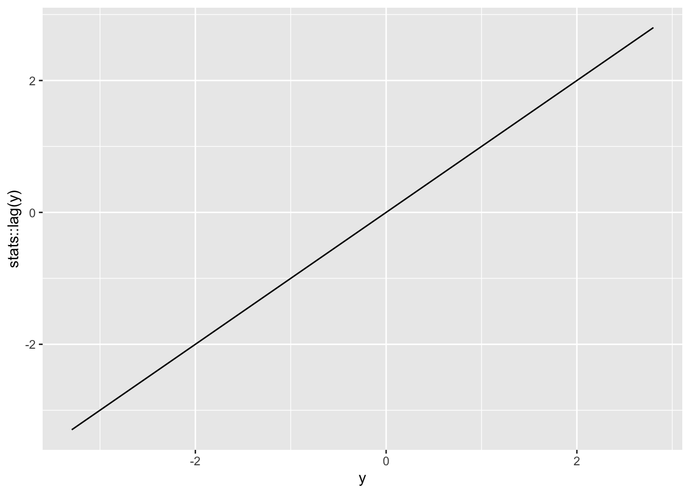

2.5 Exercises
2.5.1 Simulating time series
The code below explores what time series structures look like, as well as the effectiveness of fitting models, incluidng smooth trends plus time series errors.
There could be a useful exercise to explore the effectiveness of gamm in this setting. Plot the estimates of the correlation parameter etc.
library(mgcv)
n <- 100
fn <- function(x) cos(2 * pi * x / n)
rho <- 0.5
x <- 1:n
y <- arima.sim(model = list(order = c(1, 0, 0), ar = rho), n = n)
y <- fn(x) + y
library(tidyverse)
ggplot(data.frame(y), aes(x = y, y = stats::lag(y))) + geom_line()
# plot(y)
# plot(y, lag(y))
model <- gamm(y ~ s(x), correlation = corARMA(form = ~ x, p = 1))
plot(model$gam)
curve(fn, 1, n, add = TRUE, col = 'blue')
coef(model$lme$modelStruct$corStruct, unconstrained = FALSE)## Phi
## 0.4078068